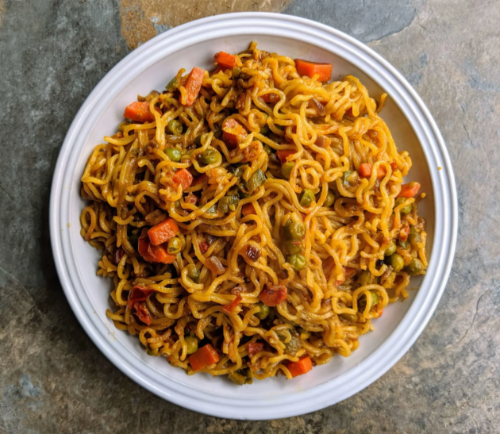

Maggi Recipe

Description
Maggi noodles are an instant noodle brand produced by Nestlé. They are
popular in many countries around the world, but especially in India, where
they are often referred to as "Maggi" or "2-minute noodles".
The noodles are made from wheat flour, palm oil, and spices. They are
typically cooked in boiling water for 2 minutes, and then served with a
flavor packet. Maggi noodles come in a variety of flavors, including
masala, chicken, and tomato.
Ingredients
- 1 packet Maggi noodles
- 1 tablespoon oil
- 1/2 onion, finely chopped
- 1/2 tomato, finely chopped
- 1/4 cup mixed vegetables (e.g., peas, carrots, beans)
- 1 green chili, chopped (optional)
- 1/2 teaspoon ginger-garlic paste
- 1/4 teaspoon turmeric powder
- 1/2 teaspoon red chili powder (adjust to your spice preference)
- 1/4 teaspoon garam masala powder
- Salt to taste
- 1/2 cup water
- Chopped coriander leaves for garnish (optional)
Steps
-
Heat oil in a pan over medium flame. Add the chopped onion and fry until
translucent.
- Add the ginger-garlic paste and cook for another minute.
- Add the chopped tomato and cook until softened.
-
Add the mixed vegetables and green chili (if using). Cook for a few
minutes until slightly softened.
-
Add turmeric powder, red chili powder, garam masala powder, and salt.
Stir well to combine.
- Add the water and bring to a boil.
- Break the Maggi noodles into the pan and simmer for 2-3 minutes, or until the noodles are cooked through and the water is absorbed.
- Stir in the Maggi masala packet and mix well.
- Garnish with chopped coriander leaves (optional) and serve hot!